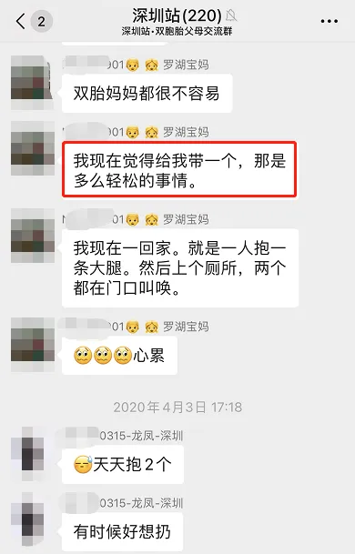
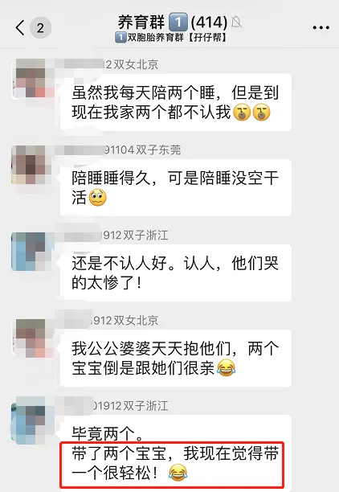
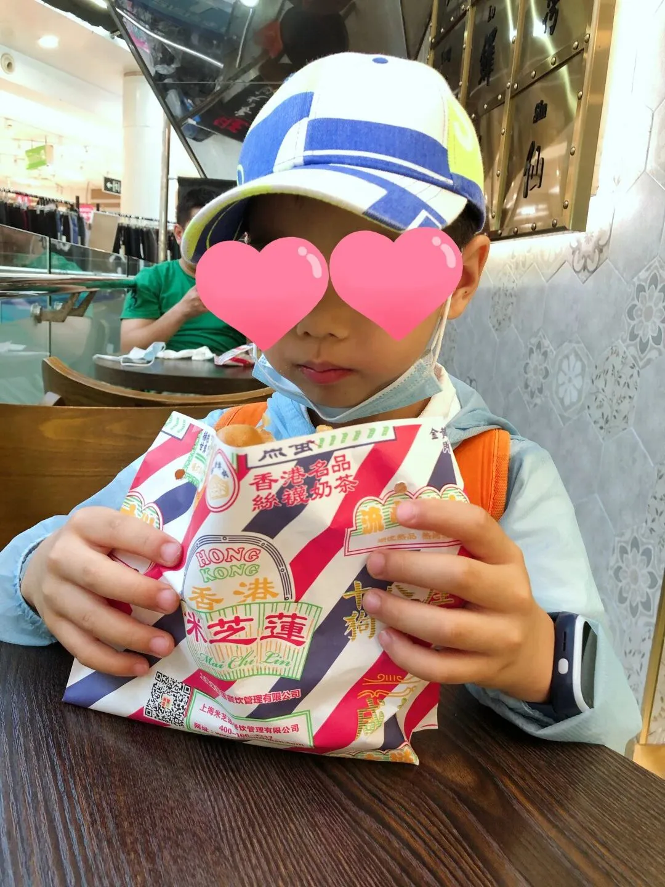
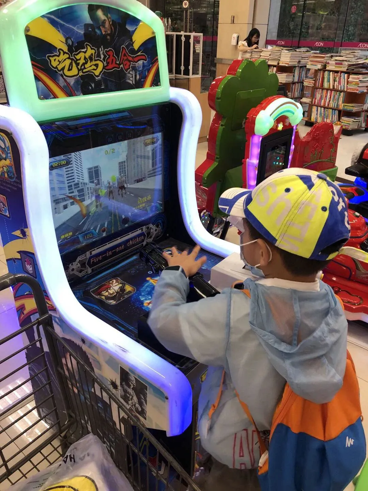
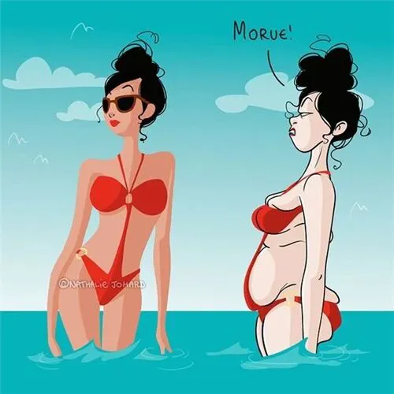

孖仔帮
公众号ID：twinsbang
关注
文|圆圈妈
网图|侵删
先插播一则群通知：第10期双胞胎跳蚤市场群已开放，公众号输入“赶集10”，扫码即可入群。
上周日的母亲节，为庆祝自己【今日我是女猪脚】，我给自己放了一天假。
睡到自然醒？
圆圈爸带着两个儿子同时消失？
与闺蜜约了一起SPA，一起下午茶？
不，你想多了，当妈之后，以上都是做梦，以下这张图才是现实！
不得不否认，这才是母亲节最真实最扎心的真相！
曾经我以为，当妈后只需要把娃养大18岁就可以撒手不管了，原来...直到躺坟墓了，还得惦记着保佑他衣食无忧，健康平安。
所以，我就不挣扎了，认命吧，谁让我当妈了，还是乖乖带娃去吧！但这次只带一个娃出门。于是，我选了最调皮捣蛋的那个娃，哥哥圆圆。
1
早就听说只带双胞胎之一会倍感轻松，因为娃少了一只啊，难度指数也会相应地大大减少。
看双胞胎社群妈妈们的吐槽，我觉得太夸张了吧！
带着人类幼崽出门，岂有轻松的道理，老是状况百出，那不叫逛街休闲，而是从一个坑掉入另一个坑。
实际呢？还真不是坑，对于带惯了两个孩子的妈妈来说，突然间只带一个孩子，是真的很轻松。如果说，带双胞胎出门，是千锤百炼的炼狱；那么，带双胞胎之一出门，就是漫步云端，宛如天堂。
这一天，前所未有的愉快。我们去了科学馆，还去了书店，去了超市，去了星际传奇...玩得意犹未尽，到晚上8点多才舍得回家。
全程0压力，0干扰，360°无滤镜的和谐...
总之，母慈子孝，岁月静好。
圆圆一反常态地乖巧听话，温顺可人，大大满足了我对6岁小男孩的所有幻想。
平时我们4人一起出行，圆圆总是在出门前磨蹭很久；今日他老早就准备好，静静地坐在小凳子等我。
平时他总要走在前面，不让我们牵，撒腿就跑，完全不管我们有没有追上来；今日他老老实实地拉着我的手，紧跟在我的前后左右，生怕把我跟丢了。
平时他总是动个不停，一刻都闲不住，这里摸摸那里敲敲；今日他很规矩地跟我一起等公交车，上车后端正地坐在座位上，不吵闹不尖叫。
小插曲：我故意说我不认识路，昏昏欲睡的他马上打电话给圆圈爸求助路线，强忍住睡意，生怕坐过站，还叫我别担心，表示一定会带我去科学馆的！那认真郑重其事的样子，让人忍俊不禁。
逛完科学馆，我们还吃了顿下午茶，看着他静静地坐在我的对面，吃着鸡蛋仔，偶尔抬头卖萌式地对我傻笑一下，我老母亲的心啊，瞬间开花了，竟然有种在跟小鲜肉约会的错觉，甜蜜极了。
奇怪，以前只觉得他是个狂躁的小暴君，恼人的小赖皮，这会儿竟然温顺地像个小羔羊。有那么一瞬间，我都怀疑自己是不是穿越了。
TO MY
MOTHER
于是，我更加放飞自我了，脑门一热竟买了条裙子。
试穿裙子再配上一双高跟凉鞋的那一刻，激动得我老泪纵横，圆圆也很识趣地赞美到：“妈妈好美哦！”
美不美我不清楚，主要是我...太激动了，激动到模糊了，飘了！
带娃出门还能顺便买衣服，这在以前简直想都不敢想，更离奇的是我居然敢穿裙子了。
6年了，已经6年没有穿过裙子了！
我差点忘记，6年前的自己也是小仙女一枚，一个穿着碎花裙子，蹬着高跟鞋，四处打卡拍照，巧笑嫣然的花姑娘啊！
自从生了一对双胞胎后，就变了，就不正常了，就与摩登时尚彻底绝缘了。
带双胞胎出门，从来都是运动平底鞋，还要带助跑功能，方便有突发状况时能迅速响应起来，比如一个娃往东边跑了，另一个娃往西边溜了，我能一个箭步，以秋风扫落叶的速度把两个娃都抓回来。
这就是我带双胞胎出门从来不穿高跟鞋出门的理由。
带双胞胎出门，从来都是T恤+深色牛仔裤，T恤还必须是宽松肥大那种，特别是刚生完双胞胎的头一年，160的个子一直在125斤徘徊，唯有加倍加倍再加倍的XXXL才能遮住那呼之欲出的赘肉。
至于为何是牛仔裤，还得深色呢？耐磨啊，耐脏啊！
妈妈带娃出门在外有多不方便，只有当过妈妈的才懂，更何况还是带着两个一样大的娃。
大袋小袋还是其次，最重要的突发状况频发，这俩娃若同时哭同时饿，那场面会凌乱到让人脑回路特别清奇...
于是，席地而坐，倒地就躺是常有的事，哪怕旁边就是垃圾站，正飘着无法言喻的气体...也无所谓了，紧急情况下嘛，还是赶紧冲奶粉，喂奶吧！
2
跟我一样放飞自我的还有今天的男主角，圆圆小朋友。今天的他不是双胞胎中的哥哥，而是他自己。
以前就听前辈妈妈提到过：要创造机会与双胞胎之一单独相处，这样可以帮助孩子尽早找到自我。对此，我总是半信半疑。
今儿个，我真的相信了。
双胞胎的自我认同之路太艰难了！因为，当你千方百计想要成为你自己的时候， 偏偏就是有人把你认错， 这绝对是最惨的。
我感觉，他好像一只长期呆在浅水滩的小海豚，今天终于回归大海，畅快遨游了！
在他看来，没有圈圈在，今天的妈妈是完整的，是只属于他一个人。虽然他也和喜欢跟圈圈在一起玩，但单独与妈妈在一起，就不用担心被忽视，他可以随心所欲地做自己。
最重要的是，他终于耳根子清净了！
我没有催促他，「你看圈圈走的多快，你也要走快点！」
也没有路人问他，「你们俩谁是哥哥，谁是弟弟？」
没有我们无时无刻的比较，他自在多了，做得好，做得不好，因为没有参照物，没有对比，谁也不会唠叨他，他也很轻松。
他就是他自己，一个很普通的6岁小男孩，偶尔调皮，偶尔卖乖。按自己的方式做自己，他很开心！
难怪他晚上睡觉前跟我说：“妈妈，我还要跟你出去玩，我们不带爸爸不带圈圈哦。”
我心里涩涩的，惭愧极了。
双胞胎妈妈的母爱，残缺的爱！
其实孩子想要的很简单，就想要妈妈100%爱的浓度，哪怕只有一天24小时中1%的时间。
强烈呼吁双胞胎家长们，多与双胞胎之一单独相处吧。这不是偏心，不是不公平，而是给孩子更多机会去找回被忽略的自我，找回缺失的另一半母爱。
玩了什么，做了哪些，说了什么，只是其次，重要的是，在与双胎之一单独相处时， 给孩子们传递一种独一无二的感觉，让他们可以在不被手足的影响约束下，尽情地释放自己，表现最真实的自己，让双胎之一在每次的一对一相处中都能体会到“妈妈最爱我”。
临睡前，我跟圆圈爸商量着，下次轮到我带圈圈，队友带圆圆，期待不一样的惊喜哦。
-END-
今日互动话题
#双胞胎妈妈只带一个娃，是不是特别轻松？#
评论区聊一聊呗！
微信公众号：孖仔帮
ID : twinsbang
专注双胞胎孕育，养育，教育经验分享
扫码关注我们
点一下你会更好看耶






